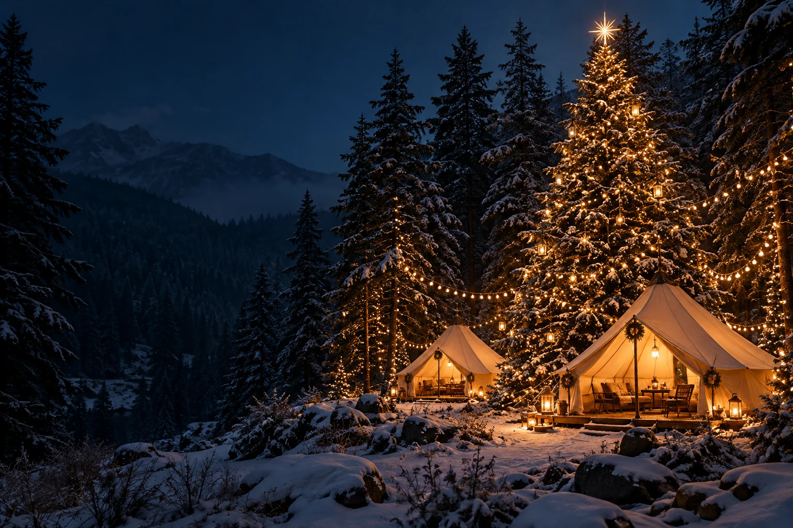

A WARM WELCOME
따뜻한 웰컴푸드
겨울 캠핑의 시작을 따뜻한 한 끼와 함께.

Merry, early.
크리스마스보다 일주일 먼저,
우리만의 겨울이 시작됩니다.
미리 크리스마스 캠프
2026.12.18 FRI — 12.20 SUN
Dear, winter lovers.
함께 불을 바라보고, 트리에 소원을 걸고,
서로의 산타가 되어주는 시간.
올해의 마지막 캠핑은 조금 특별했으면 해요.
밖에서는 불멍, 안에서는 축제.
추운 계절을 따뜻하게 채울 순간들을 준비해요.
겨울 캠핑의 시작을 따뜻한 한 끼와 함께.
소원 엽서를 걸어 우리만의 트리를 완성해요.
타닥타닥, 모닥불 곁에서 나누는 겨울 이야기.
함께 웃고 움직이며 겨울의 온도를 높여요.
구경하는 재미까지 가득한 작은 크리스마스.
맛있는 음식과 함께 무르익는 캠핑의 밤.
아이도 어른도, 함께 놀라는 마법 같은 순간.
서로의 산타가 되어 마음을 나눠요.
함께여서 더 따뜻한 두 번째 겨울밤.
현재 준비 중인 프로그램입니다. 세부 내용과 운영 시간은 추후 공지되며, 현장 상황에 따라 변경될 수 있습니다.
마지막 날까지, 느긋한 겨울의 여운.
퇴실 시간은 추후 안내됩니다.
날씨는 조금 추워도
함께 뭉치면 따뜻한 캠핑
여섯 캠핑 크리에이터가 함께 기획하는
새로운 겨울 캠핑 이야기.
BROUGHT TO YOU BY 캠핑여지도
이번 겨울, 우리가 만날 베이스캠프.
캠핑 사이트·게스트룸·단체펜션을 준비 중입니다.
충북 옥천군 청성면 한두레로 387
장소는 제공된 행사 포스터 기준입니다. 이용 구역과 숙박별 세부 조건은 모집 공지를 확인해 주세요.
우리 가족의 겨울 캠핑을 신청해 주세요.
숙소와 인원을 선택하면 입금 금액을 계산해 드려요.
2박 3일 · 어른 2명 + 아이 2명 기준
캠핑카 / 카라반 / 캠핑 트레일러
1만원 추가
신청서는 기존 구글폼으로 제출됩니다.
입금 확인은 관리자가 진행합니다.
위의 참가 신청 버튼에서 신청서를 작성할 수 있습니다. 숙소와 인원에 따라 입금 금액을 계산하고, 신청 내용을 기존 구글폼에 제출합니다.
텐트 없이 이용할 수 있는 게스트룸은 22만원, 단체펜션은 48만원입니다. 단체펜션은 2가족 이용이 가능합니다. 숙박별 수량과 예약 조건은 모집 공지를 확인해 주세요.
미니운동회, 크리스마스 마켓, 마술 공연은 실내 프로그램으로 준비 중입니다. 캠프파이어 등 야외 프로그램도 함께 진행할 예정입니다.
선물 교환 프로그램의 준비물과 참여 방법은 추후 안내됩니다. 확정 공지가 올라오면 확인해 주세요.